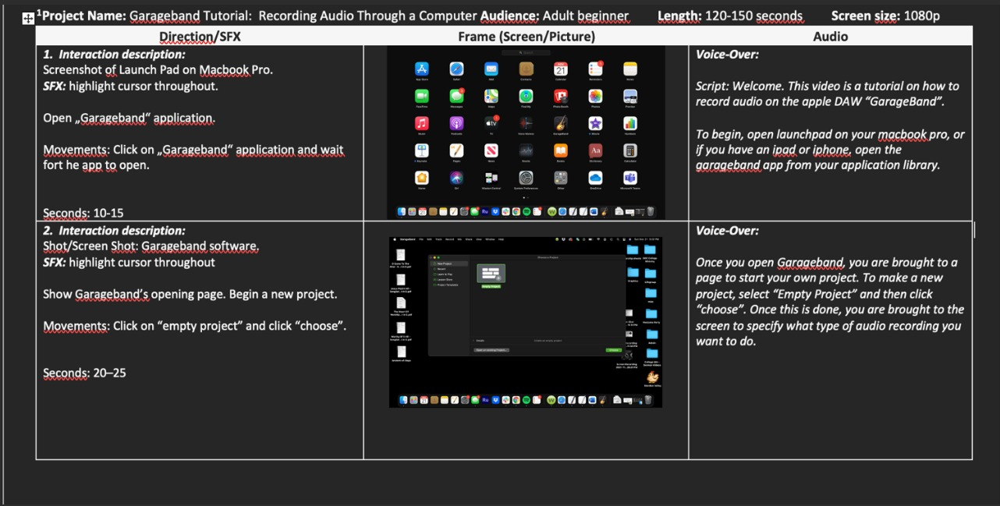
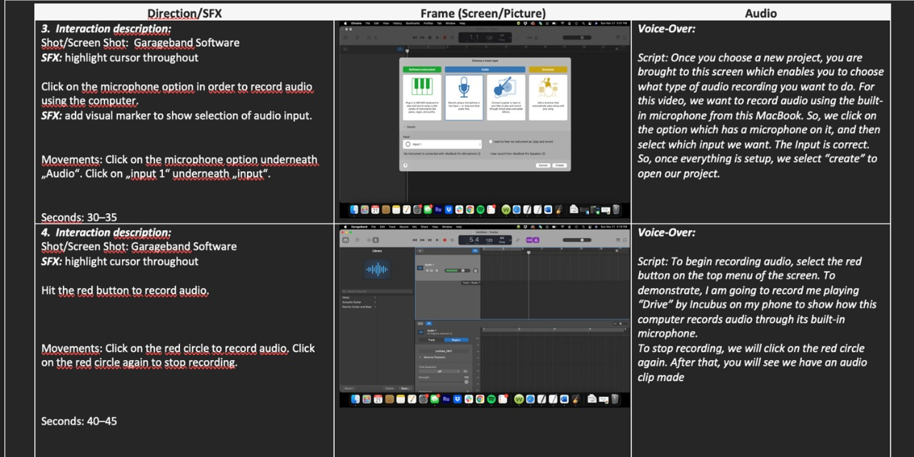

Garageband Tutorial
Within TECM 5191, I gained experience making a storyboard via an adapted template from Larsen, G (July 3, 2012) The Storyboard: An Outline for Visual Technical Communications on TECHwhirl.
Situation
This storyboard was used to design and help implement the creation of a tutorial video. The video was used to describe how to record audio using GarageBand on an Apple MacBook.
Task and Action
Adding specific details to the process of creating this tutorial was the main priority of this storyboard. This included how the user recording the video were to interact with the computer, how long they were supposed to speak, what FX were to be included in the recording, and what the narrator of the video was supposed to say. This was organized with a template on Microsoft Word to sort this information out.
Result
The end product of the storyboard was a thorough game-plan for the creation of the video. It provided all of the necessary information for the creator to begin recording and editing their content. Without this storyboard, it would have been much harder for the creator of the video to know how to structure the flow of the tutorial. This organization eliminated confusion on where to begin and end the instructional video.